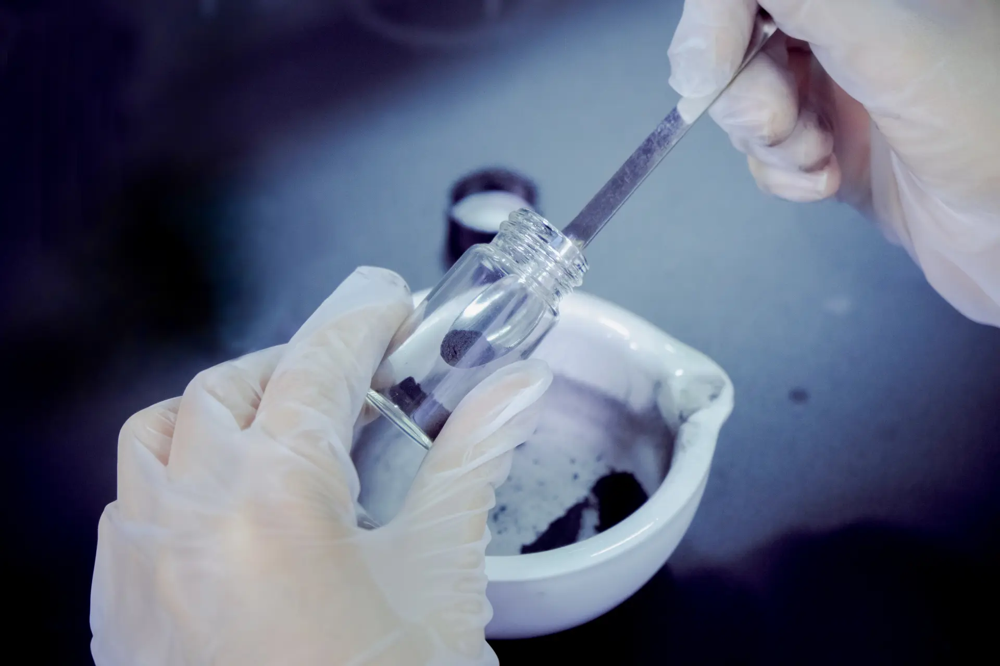
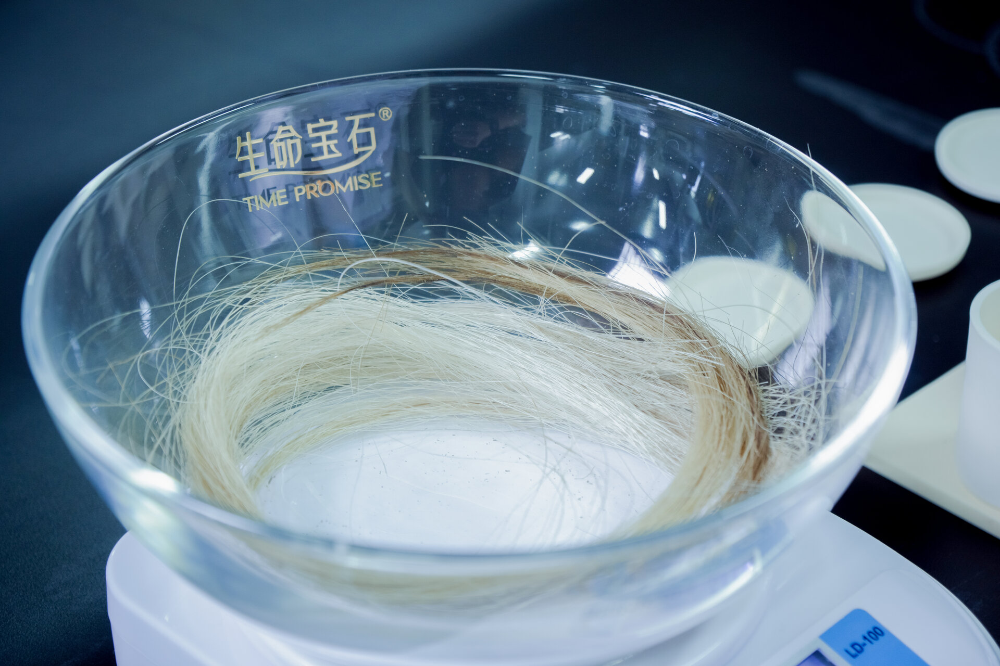

Memorial diamond manufacturing begins with a biological sample: human hair, pet fur, or botanical material. The carbon contained within that sample must be extracted, purified, and converted into graphite before it can serve as feedstock for HPHT synthesis. This extraction pipeline is not a simple incineration process. It is a controlled chemical engineering sequence involving thermal decomposition, acid purification, and high-temperature graphitization. For B2B partners — pet cremation services, veterinary clinics, and memorial businesses — understanding this pipeline is essential for client communication, quality assurance, and inventory planning.
The core principle is straightforward: biological material is predominantly organic carbon, but it is contaminated with nitrogen, sulfur, hydrogen, and inorganic minerals. These contaminants must be removed to prevent interference with the HPHT synthesis process. The resulting graphite must meet purity standards comparable to industrial synthetic diamond feedstock. BioGem Lab's carbon extraction technology, protected by patent ZL 201010565778.9, operates at a scale and precision suitable for commercial memorial diamond production with consistent yield and quality.
TL;DR — Quick Summary
Converting biological samples into HPHT-ready graphite requires four controlled stages: preparation and cleaning, thermal carbonization at 400–600°C, chemical purification with acid washing, and high-temperature graphitization at 2,600–3,000°C. High-purity carbon extraction requires adequate starting material, making adequate starting material essential for successful memorial diamond production.

The Chemistry of Biological Carbon Sources
Human hair, pet fur, and plant material share a common structural polymer: keratin in hair and fur, cellulose in plants. These are carbon-based macromolecules, but their elemental composition differs significantly from the pure carbon required for diamond synthesis.
Elemental Composition of Human Hair
Human hair is approximately 30-40% carbon by mass, with the remainder comprising nitrogen (15-17%), hydrogen (6-7%), oxygen (28-30%), sulfur (3-5%), and trace minerals (calcium, magnesium, iron, zinc). The sulfur content is particularly significant because it originates from cysteine amino acid cross-links in the keratin structure. These elements must be removed during purification; nitrogen and sulfur are especially problematic because they can form defects or inclusions during HPHT synthesis if they persist in the graphite feedstock.
Pet fur shares the same keratin backbone but with species-specific variations. Dog and cat fur typically contains higher sulfur content than human hair, particularly in breeds with coarse outer coats. The mineral content also varies depending on diet and environmental exposure. These differences are managed during the purification stage through process parameter adjustment, not through source discrimination.
Botanical Material as Carbon Source
Plant material — leaves, flowers, stems — provides an alternative carbon source with different structural chemistry. Cellulose is a polysaccharide rather than a protein, so the nitrogen and sulfur content is lower. However, botanical material contains higher levels of inorganic minerals (silica, potassium, calcium) derived from soil uptake. The carbon content is typically 40-45% by mass, comparable to hair, but the ash content after incineration is significantly higher. This means the purification process must handle more inorganic residue.
Carbon Extraction: The Pipeline
The extraction pipeline from raw biological sample to synthesis-ready graphite consists of four stages: preparation, carbonization, chemical purification, and graphitization. Each stage operates under controlled conditions with defined quality gates.
Stage 1: Sample Preparation and Cleaning
Raw biological samples arrive with environmental contaminants: oils, dust, product residues, and microbial material. The first step is mechanical cleaning and solvent washing to remove surface contaminants. Hair samples are washed with dilute detergent and deionized water, then dried under controlled temperature to prevent protein denaturation that would alter the carbon structure. Pet fur samples undergo an additional de-oiling step because sebaceous oils are more persistent than human scalp oils.
Sample mass is recorded at intake and after cleaning. This establishes the baseline for yield calculations. A typical submission of 6 grams of cleaned hair is sufficient for a standard 1-carat memorial diamond. Larger carat weights or multiple diamonds require proportionally more starting material.
Stage 2: Carbonization
Carbonization is the thermal decomposition of organic material in the absence of oxygen. The sample is placed in a sealed quartz vessel and heated to 400-600°C in a nitrogen atmosphere. At these temperatures, the keratin or cellulose structure breaks down, releasing hydrogen, nitrogen, and sulfur as volatile gases while leaving a carbon-rich char residue. The carbonization process typically reduces the sample mass by 60-70%, leaving a black, brittle carbonaceous material that is approximately 70-80% carbon by mass.
Temperature control is critical during carbonization. Below 400°C, decomposition is incomplete and residual organic matter remains. Above 600°C, the carbon structure begins to reorganize into microcrystalline graphite prematurely, which can trap impurities. The optimal temperature window ensures maximum carbon retention while allowing complete volatile release.
Stage 3: Chemical Purification
The carbonized char contains inorganic minerals, residual nitrogen, and sulfur compounds. Chemical purification removes these contaminants through sequential acid and base treatments. The standard protocol uses hydrochloric acid to dissolve metal oxides and carbonates, followed by sodium hydroxide to remove silica and residual organic compounds. The carbon residue is then washed with deionized water until neutral pH is reached.
This purification stage is where process variation has the greatest impact on final diamond quality. Incomplete purification leaves contaminants that can form color centers or inclusions during HPHT synthesis. Over-purification, particularly with oxidizing acids, can degrade the carbon structure and reduce graphitization efficiency. BioGem Lab's purification protocol, refined through process validation across thousands of samples, balances completeness with carbon retention.

Stage 4: Graphitization
The purified carbon is not yet graphite. It exists as amorphous carbon — a disordered carbon structure without the crystalline order required for HPHT synthesis. Graphitization converts this amorphous carbon into crystalline graphite through high-temperature thermal treatment. The sample is heated to 2,000-2,800°C in an inert atmosphere, causing the carbon atoms to reorganize into layered hexagonal planes — the graphite structure.
The degree of graphitization is measured by X-ray diffraction (XRD). Fully graphitized material shows a sharp (002) peak at 26.5° 2θ, corresponding to the interlayer spacing of 3.354 Å. The width of this peak indicates crystallite size; larger crystallites produce sharper peaks and better HPHT synthesis performance. BioGem Lab's graphitization process consistently produces graphite with crystallite dimensions exceeding 50 nm, well within the specification for industrial diamond synthesis.
Our detailed article on graphitization explains the crystallographic transformation and how graphite structure influences diamond growth kinetics.
Yield Analysis and Process Economics
Carbon yield is a critical parameter for B2B partners because it determines the minimum sample size required and the cost structure per carat. The yield cascade from raw sample to final diamond is not 100% — each stage introduces losses.
Carbon Yield Cascade (Typical)
- Raw sample mass (cleaned)6.00 g
- Carbon content (30-40% C)≈2.0 g carbon
- After purification≈1.6 g carbon
- After graphitization≈1.5 g graphite
- HPHT synthesis utilization≈0.3 g consumed
- Diamond yield (conversion)≈1.0 carat
The overall mass yield from raw biological sample to finished diamond is approximately 15-20% of the original carbon content. Since keratin hair is 30-40% carbon by mass, roughly 6 grams of hair provides the purified graphite needed for a 1-carat finished diamond, with a comfortable safety margin. For context, a single human hair weighs approximately 0.00006 grams, so 6 grams represents roughly 100,000 individual hairs — still no more than a small lock.
Quality Control and Batch Validation
Every batch of extracted graphite undergoes quality control before entering the HPHT synthesis pipeline. The validation protocol includes three measurements: carbon purity (by elemental analysis), crystallite size (by XRD), and ash content (by thermogravimetric analysis). Graphite that fails any specification is reprocessed or discarded.
Purity Specifications
The target carbon purity for HPHT feedstock is >99.95%+. Contaminants above this threshold can alter crystal growth kinetics, produce color defects, or reduce optical clarity. Nitrogen is particularly problematic because it substitutes for carbon in the diamond lattice, producing yellow coloration. Sulfur and boron similarly produce color centers. The purification process reduces nitrogen from ~15% in raw hair to <0.1% in the final graphite, and sulfur from ~5% to <0.05%.
Traceability and Batch Documentation
Each biological sample is assigned a unique identifier at intake, and that identifier follows the material through every stage of processing. The carbonization vessel, purification batch, graphitization run, and HPHT synthesis cell are all recorded in the batch documentation. This chain of custody ensures that the final diamond can be traced back to the original biological sample, a critical requirement for memorial diamond authenticity. BioGem Lab's traceability system includes photographic documentation and certificate generation for partners.
Comparative Analysis: Hair vs. Pet Fur vs. Botanical
B2B partners often ask whether different biological sources produce different diamond outcomes. The answer is nuanced: the source affects the extraction process but not the final diamond properties, provided the purification protocol is executed correctly.
Process Variability by Source
Human hair and pet fur present the most similar extraction profiles. Both are keratin-based, with comparable carbon content and structural chemistry. The primary differences are sulfur content (higher in pet fur) and mineral content (variable by species and diet). The purification protocol handles these variations through standard acid/base treatment without requiring source-specific modifications.
Botanical material requires a longer purification stage because of higher inorganic mineral content. Plant cells contain silica phytoliths — microscopic glass particles formed from silicon absorbed from soil. These silica particles must be dissolved in hydrofluoric acid or strong base, adding a processing step not required for hair or fur. However, the lower nitrogen content of botanical material means the final graphite is less prone to producing, which some partners consider advantageous for colorless memorial diamond production.
Our article on carbon source purity provides a detailed comparison of how different carbon sources influence diamond quality metrics.
Scaling and Industrial Production
Carbon extraction is not a bottleneck in memorial diamond production. The process is batch-based and parallelizable — multiple samples can be carbonized, purified, and graphitized simultaneously in separate vessels. The limiting factor in production capacity is HPHT synthesis cell availability, not carbon extraction throughput. For B2B partners managing white-label programs, this means that sample intake can be processed promptly without creating inventory backlogs.
The typical processing timeline from sample receipt to synthesis-ready graphite is 7-10 days. This is followed by 18-25 days of HPHT crystal growth, plus 5-7 days for cutting, polishing, and certification. Remaining time is allocated to sample intake, quality inspection, and shipping. Total turnaround from sample submission to finished diamond is approximately 60 days, a figure that BioGem Lab maintains across its partner network. Our production timeline article breaks down each stage in detail.
Explore Manufacturing Capabilities
Learn about HPHT synthesis infrastructure, quality validation systems, and partner production capacity.
Explore ManufacturingPatent-backed carbon extraction technology. Patent No. ZL 201010565778.9
Frequently Asked Questions
How much hair is needed to extract enough carbon for a memorial diamond?
BioGem Lab's minimum submission is 6 grams of hair, regardless of the target carat weight. Approximately 6 grams of human hair provides enough carbon for a 1-carat finished diamond; smaller stones require proportionally less carbon (about 3 grams for a 0.5-carat diamond), but the 6-gram minimum still applies to cover purification and processing losses. Pet fur has a lower fiber density, so a 1-carat diamond typically requires 8-10 grams. For peace of mind, BioGem Lab recommends submitting 10-20 grams to leave a comfortable safety margin.
Does the carbon source affect the quality of the memorial diamond?
No. The HPHT synthesis process uses purified graphite as the carbon feedstock, regardless of origin. Once biological material is processed through carbonization, purification, and graphitization, the resulting carbon is chemically identical to any other graphite source. The diamond's quality depends on growth parameters, not the original carbon source.
Can pet fur be used instead of human hair for memorial diamonds?
Yes. Pet fur is primarily keratin, the same protein family as human hair. The carbon content and extraction process are functionally identical. BioGem Lab processes pet fur for veterinary clinics and pet cremation services as part of its white-label B2B supply program. The final diamond is indistinguishable from one grown from human hair.
What is the carbon yield from hair?
Human hair is approximately 30-40% carbon by mass. After accounting for purification, graphitization, and processing losses, the effective carbon extraction requires sufficient starting material, with purification and graphitization losses accounting for a significant portion of the original mass.
How long does the carbon extraction process take?
The carbon extraction pipeline — from raw biological sample to purified graphite ready for HPHT synthesis — takes approximately 7-10 days. This includes cleaning, drying, carbonization, chemical purification, and graphitization. The extracted graphite is then loaded into the HPHT synthesis chamber, where crystal growth requires an additional 18-25 days under standard conditions. Total turnaround from sample submission to finished diamond is approximately 60 days.
Can cremated ashes be used as a carbon source?
Cremated remains are not a viable carbon source for memorial diamond synthesis. Cremation temperatures (700–1,000°C) oxidize nearly all organic carbon to CO₂, leaving primarily calcium phosphate (hydroxyapatite) and trace metal oxides. The residual carbon content is insufficient and chemically bound in forms unsuitable for graphitization. BioGem Lab does not accept cremated remains and focuses exclusively on biological hair and fur samples, which retain intact carbon structures suitable for extraction and purification.
Li Lihua — Chief Scientist
Patent inventor ZL 201010565778.9. View profile →
Request Carbon Extraction Specifications
Detailed yield data, sample requirements, and quality validation protocols for your white-label memorial diamond program.
Request OEM Consultation